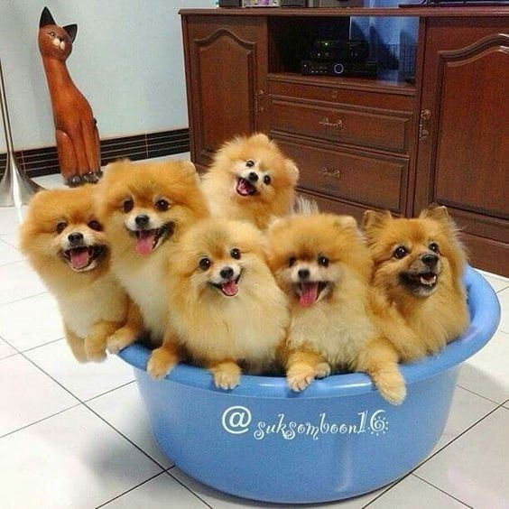
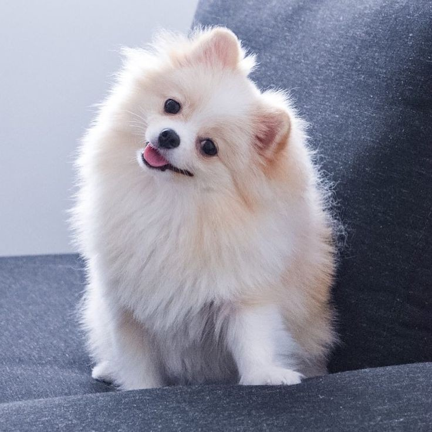
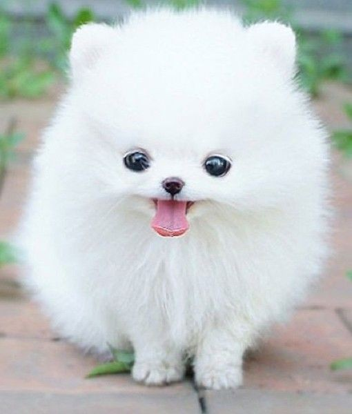
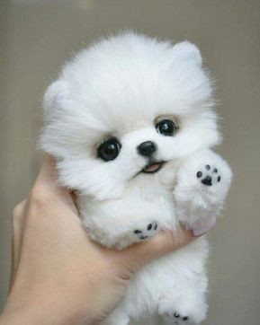
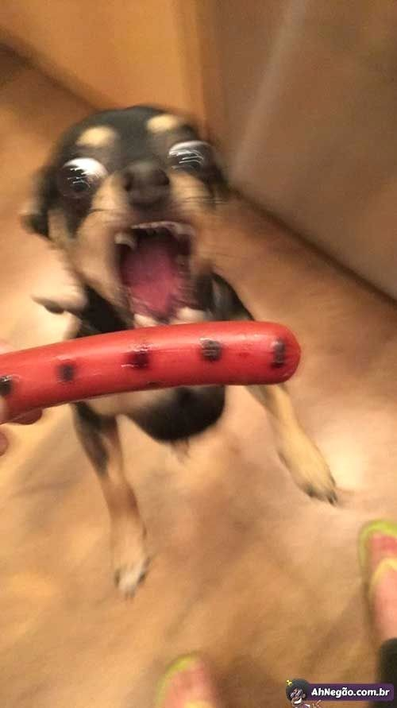
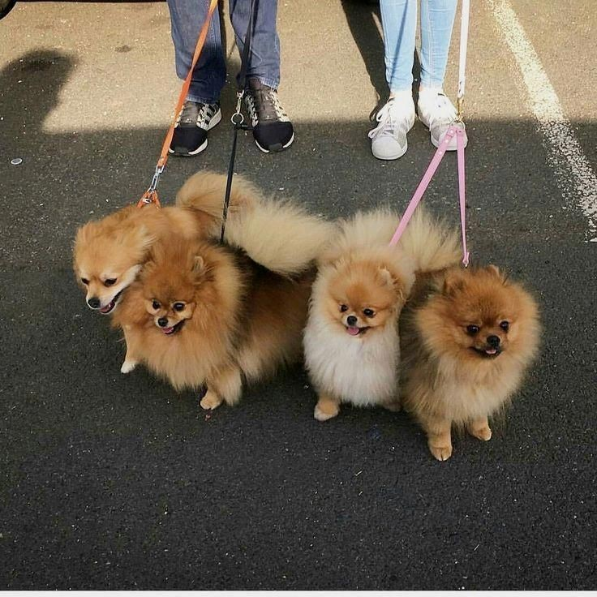

Memoirs of Oblivion
Gallery
Quotes
Music
Other
Cute animals!
(03/14/2020)
Hi, uh, I love dogs, especially pomeranians. A lot.
     
What's your favorite doggo?
Pics from Pinterest, very nice
Started On: 03/12/2020 | Finished On: 03/15/2020